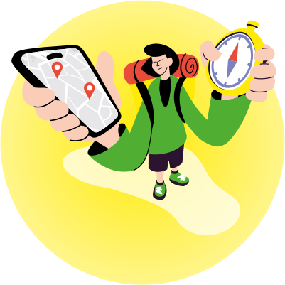

Узнай свой ID и забери из мега-вендинга то, чего так не хватает здесь и сейчас.
Выберите сервисы, которыми вы уже пользуетесь в Яндекс Go.
Тапните на одну или более иконок.

Первооткрыватель
Похоже, вы только в начале пути — откройте для себя все возможности Яндекс Go.
0001
Запомните или сфотографируйте свой код, без него воспользоваться вендингом не получится.
Введите этот код в вендинге и заберите то, что нужно именно вам. Например, фонарик от Маркета — чтобы осветить свой путь.